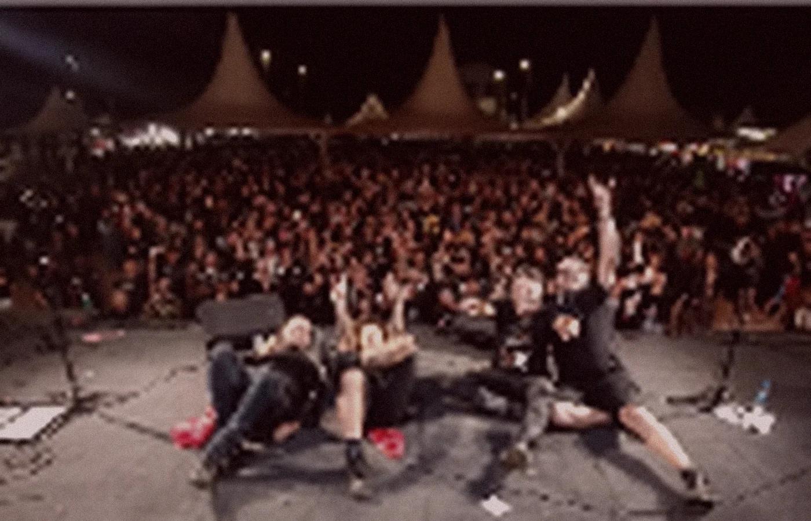
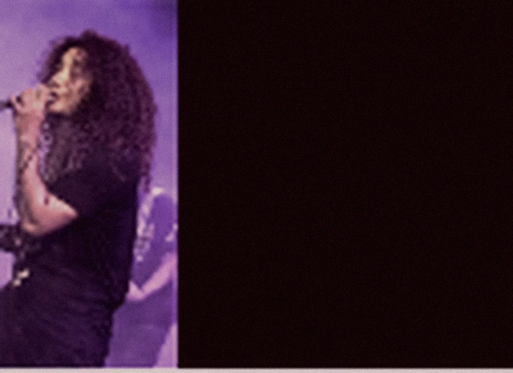
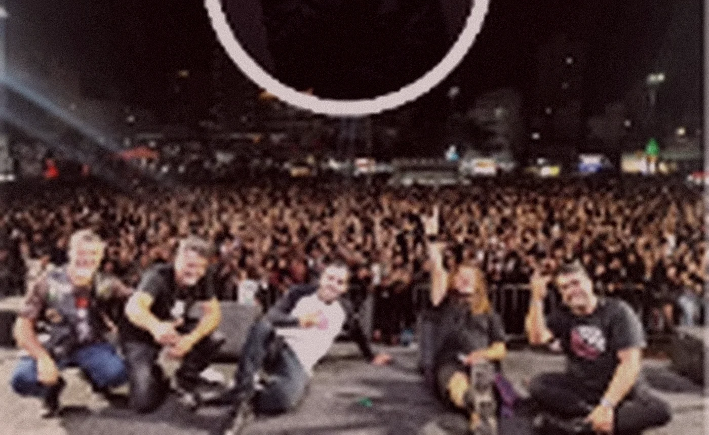

CAPÍTULO 01PLAYLIST OFICIAL
SINGLES / SELEÇÃO DE CANÇÕESUMA VOZ.
UMA VOZ.
MUITAS HISTÓRIAS.
Singles e canções reunidos numa playlist para ouvir sem sair daqui.
Abrir playlist no SpotifyCió Balbino / Rock & música autoral
Dez anos de estrada, rock na veia e o público sempre no centro da história.
02 / DISCOGRAFIA
Singles, canções e duas leituras de um mesmo universo. A trilha sonora da história começa aqui.
Singles e canções reunidos numa playlist para ouvir sem sair daqui.
Abrir playlist no SpotifyO primeiro mergulho
Outra forma de sentir
Reproduza aqui, sem sair do site. Os players são oficiais do Spotify.
03 / A TRAJETÓRIA
Com dez anos de estrada na cena mineira, Ció Balbino traduz a energia do rock e a sensibilidade do pop rock em apresentações marcantes.
À frente da banda Tutu Marambah e de seus projetos solo, o artista entrega uma performance versátil: do peso do rock n' roll ao aconchego do formato voz e violão.
Sua trajetória reúne shows, festivais e produção autoral, incluindo um single viabilizado pela Lei Aldir Blanc. Com CNPJ regularizado e estrutura profissional, Ció constrói uma identidade própria e uma conexão imediata com o público em qualquer palco.
Conheça a banda atualSeleção de vídeos públicos de Ció Balbino. Escolha uma faixa para assistir.
04 / O AGORA
Com a Tutu Marambah, Ció leva ao palco um repertório de rock e pop rock marcado por energia, presença e conexão com o público. Em paralelo, mantém seus projetos solo e apresentações em voz e violão.
TUTU MARAMBAH / POP ROCK / AO VIVO


Seis registros de apresentações e encontros com o público. Deslize a galeria ou use as setas para explorar.
05 / NO PALCO
Quatro momentos em vídeo. Porque é no encontro entre palco e público que a música ganha sua verdadeira dimensão.
QUATRO REGISTROS REAIS / ASSISTA SEM SAIR DO SITE.
VIVA O AO VIVOA ESTRADA / 2018–2026
Toque em um ano. A estrada se abre em festivais, encontros e shows marcantes.
06 / CONTRATAÇÕES
Rock em banda, repertório pop rock ou formato voz e violão. Fale diretamente pelo WhatsApp e leve Ció Balbino para seu evento.
FAÇA BARULHO.